Крем с богатой формулой, сильными восстановительными свойствами и видимым омолаживающим эффектом. SIGNAL-10 максимально быстро проникает в самые глубокие слои кожи, удерживает влагу и предотвращает ее потерю, образуя особый защитный барьер. Содержащийся в креме фитосквалан обладает антиоксидантными свойствами. Повышает мягкость и эластичность кожи, восстанавливает и возвращает защитные свойства липидному слою кожи. Питает кожу, образуя на поверхности пленку-барьер, благодаря чему кожа противостоит воздействию внешних факторов. Нанесенный на ночь, крем будет питать вашу кожу и разгладит микроморщины, эффективно восполняя дефицит гиалуроновой кислоты.
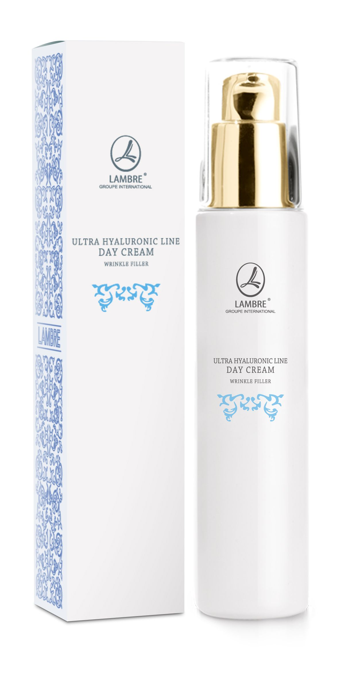
Уникальная формула крема разработана на базе революционного активного компонента SIGNAL-10. Является самой активной частицей гиалуроновой кислоты. Мгновенно проникает через верхний слой кожи, обеспечивая необходимое насыщение кислородом всех ее слоев, возвращает эластичность, уменьшая видимость даже самых глубоких морщин. HYALUROSMOOTH TM оказывает двойное действие: полисахариды образуют защитную пленку, которая связывает и удерживает воду, заполняет морщины. Экстракт японской камелии моментально делает кожу гладкой, мягкой и бархатистой. Эффективно питает и увлажняет кожу, уменьшает отеки и защищает от вредного воздействия окружающей среды. Гиалуроновый дневной крем - это Ваш первый шаг к эффективному восполнению гиалуроновой кислоты в коже
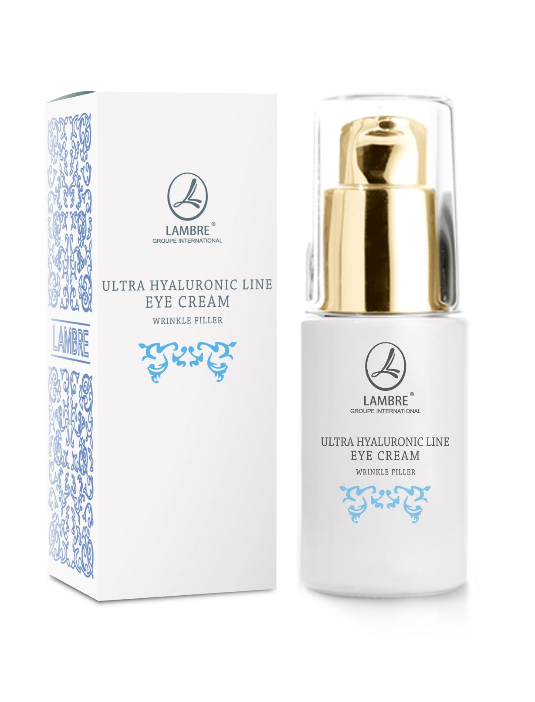
Разглаживающий крем для кожи вокруг глаз был разработан для особого ухода за самой нежной частью кожи лица. Обеспечивает мгновенное ощущение комфорта, обладает омолаживающим эффектом. Активные вещества Signal-10 и Hyaluronic Filling Spheres, содержащиеся в креме, обеспечивают увлажнение и разглаживание морщин самой нежной области кожи лица. Регулярно используя крем для кожи вокруг глаз, Вы подарите ей ухоженный и сияющий вид.
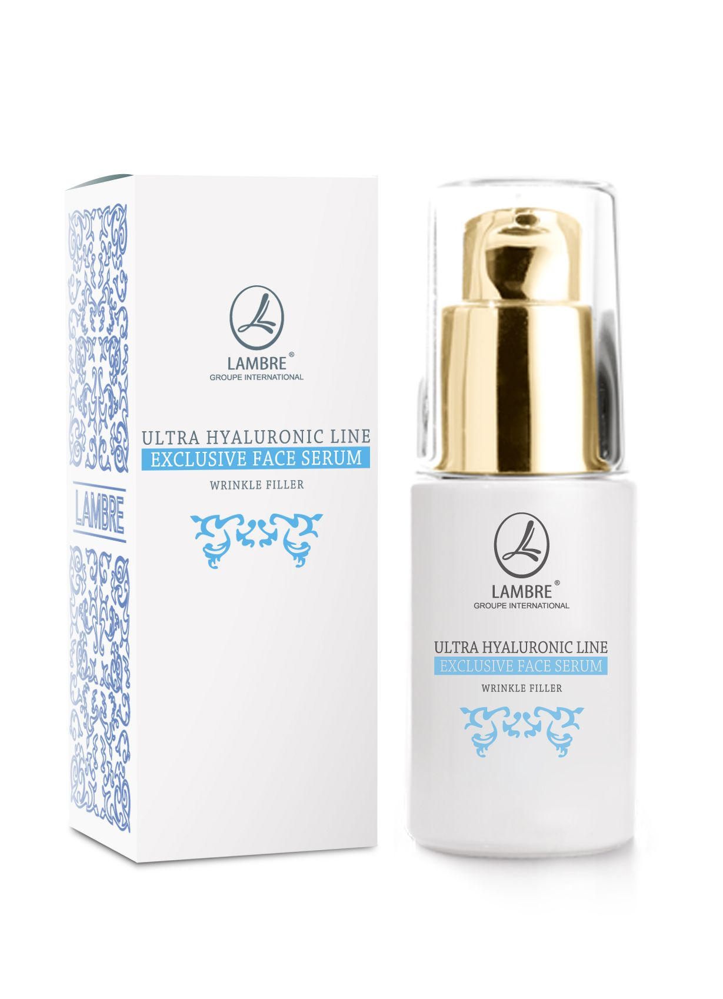
Эксклюзивная разглаживающая сыворотка предназначена для кожи, нуждающейся в интенсивном увлажнении и восстановлении упругости. Разработана на базе инновационных активных компонентов для кожи любого типа и возраста с признаками сухости. В состав сыворотки входит комбинация гиалуроновых кислот высокой концентрации. Применяйте утром и вечером для получения максимального эффекта разглаживания.
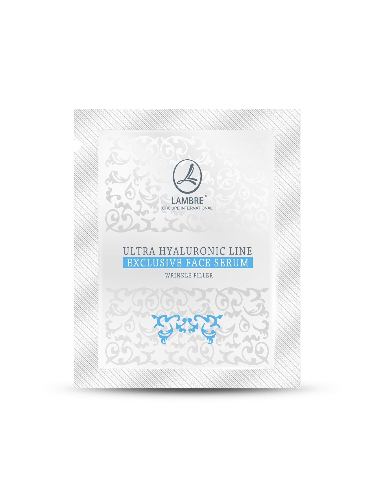
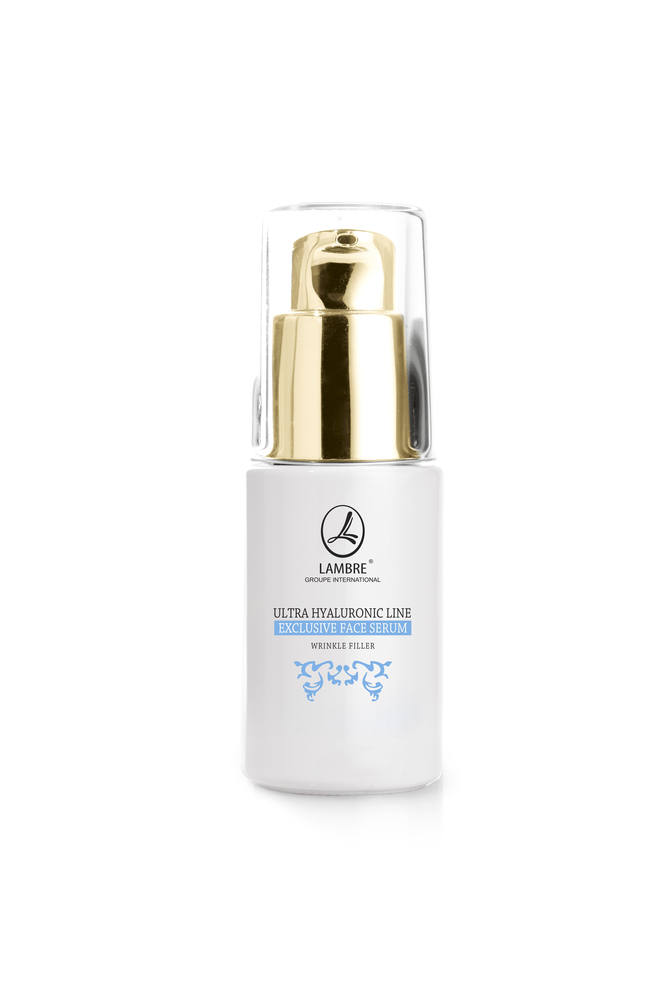
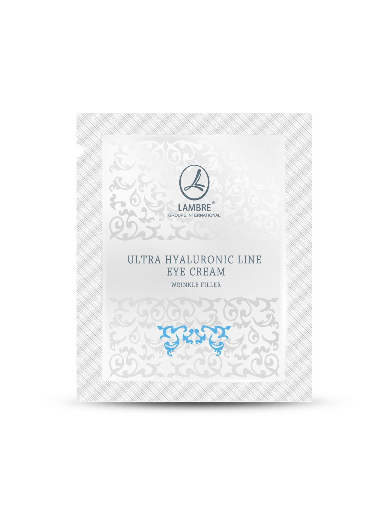
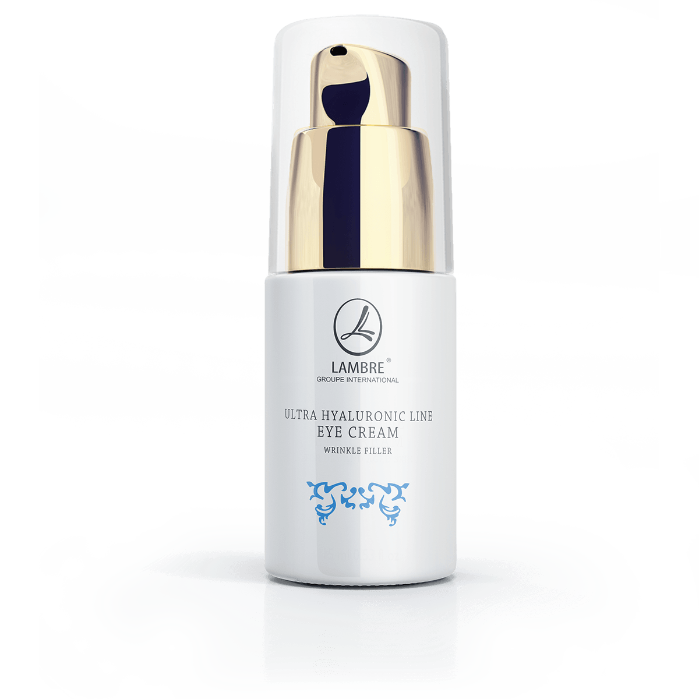
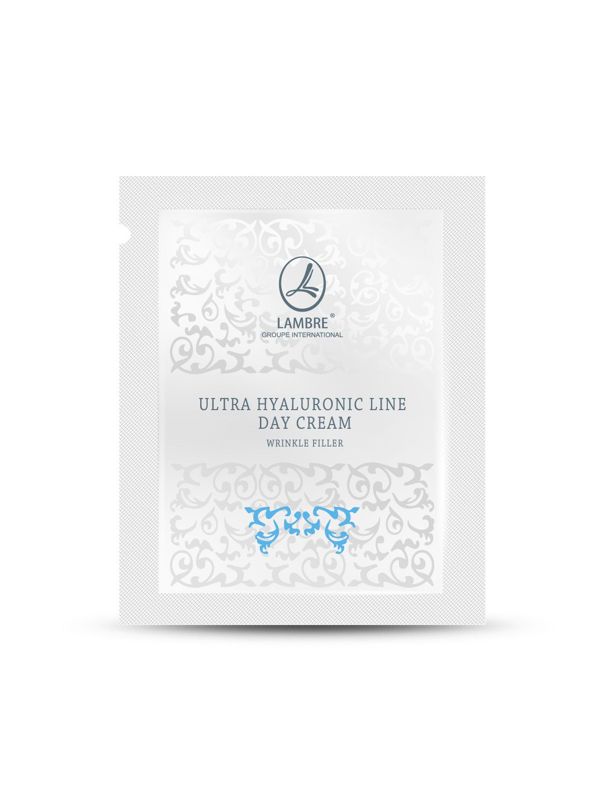
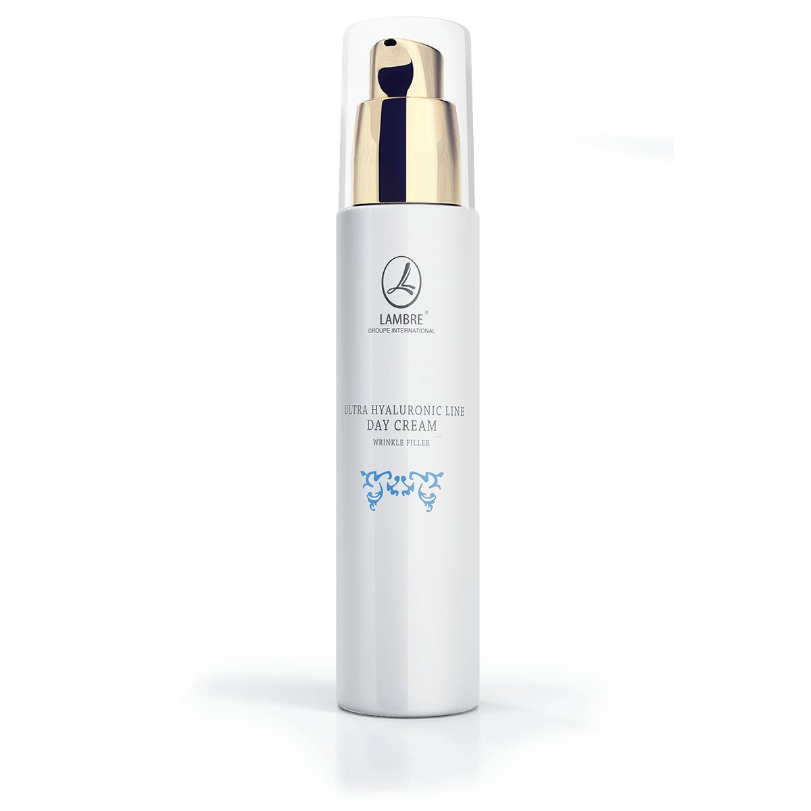
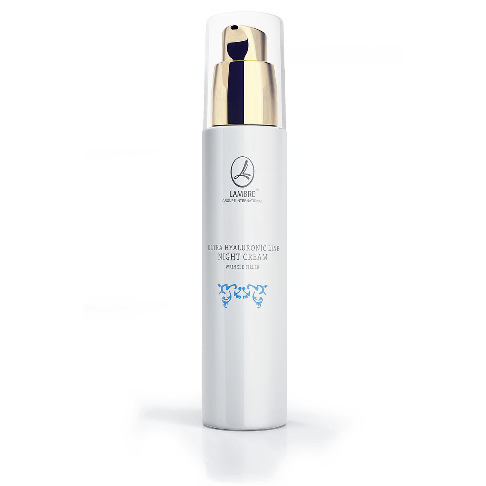
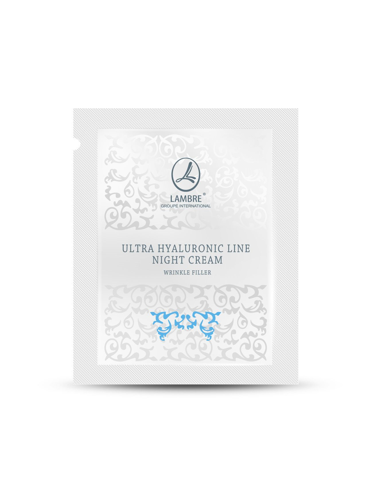